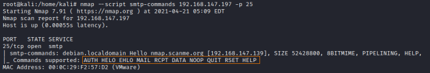
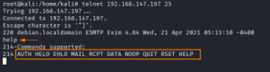
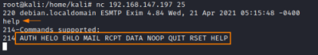
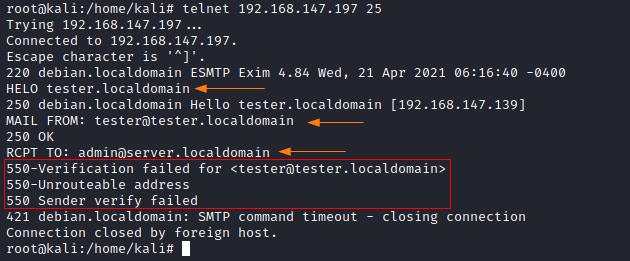

Enumerate manually Users on the Server
Enumerate Users on the Server
1. First we have to enumerate the verbs(commands), in fact to enumerate users on the server, we’re
interested in the verbs:
◇
RCPT ◇
VRFY ◇ EXPN
◇
nmap
nmap --script smtp-commands <ipTarget> -p 25
 ◇ telnet or netcat
-
telnet
root@kali:/# telnet <ipTarget> 25
help
 ▪ netcat
root@kali:/# nc <ipTarget> 25
help
2. Enumerate
users
◇ telnet
▪ enumerate users with RCPT TO verb:
- valid user will return a Status Code of “250
2.1.5”
- non-existent user will“550 5.1.1” Status Code and “User unknown” message denotes a non-existent
user.
root@kali:/# telnet <ipTarget> 25
HELO <hostname>
MAIL FROM: example1@domain1.com #source address
RCPT TO: example2@domain2.com #destination address
 ▪ enumerate users with
EXPN verb:
The SMTP "EXPN" command allow to find a mail address that is correspondent to an alias
- valid user will return a Status Code of “250 2.1.5”
- non-existent user will“550 5.1.1” Status Code
and “User unknown” message denotes a non-existent user.
root@kali:/# telnet <ipTarget> 25
HELO <hostname>
EXPN example1
▪ enumerate users with VRFY verb:
VRFY results are similar to the EXPN output
- valid user
will return a Status Code of “250 2.1.5”
- non-existent user will“550 5.1.1” Status Code and “User unknown”
message denotes a non-existent user.
root@kali:/# telnet <ipTarget> 25
HELO <hostname>
VRFY example1